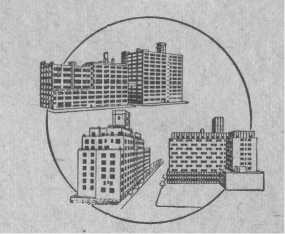

THE WATCHTOWER
COPYRIGHT, 1964 by WATCH TOWER BIBLE & TRACT SOCIETY OF PENNSYLVANIA
Published by
WATCHTOWER BIBLE AND TRACT SOCIETY OF NEW YORK, INC.
INTERNATIONAL BIBLE STUDENTS ASSOCIATION Brooklyn, New York, U.S.A.
Unless otherwise indicated, Scripture quotations are from the New World Translation of the Holy Scriptures, 1961 edition.
Made in the United States of America
ARE you a man or woman of goodwill? If you are, then you are one of those about whom an army of heavenly angels spoke in unison, almost two thousand years ago. Why did those angels appear and speak? Because an event had occurred that will yet result in eternal peace to you right here on this earth that is now menaced with a third world war.
2 The event was the birth of a baby boy in the Middle East. What happened on that occasion is no fairy tale, fable or myth, but it was witnessed by a number of hardworking men in the hill country. It was proved to be true by a medical doctor who, in his "statement of the facts that are given full credence among us," says that he had "traced all things from the start with accuracy, to write them in logical order . . . , that you may know fully the certainty of the things that you have been taught orally." The writer was Doctor Luke. He wrote more than nineteen centuries ago and his statement has been preserved in thousands of
1 . Why is it interesting now to identify oneself as among the "men of good will"?
2 . What was this important event, and why can we take very seriously today what Doctor Luke wrote about it?
handwritten copies in a number of ancient languages till the invention of printing in the fifteenth century. You can therefore take very seriously today what the angels said about you as a person of goodwill so long ago.—Luke, chapter one, verses one to four.
3 In medical history the birth of this baby boy is most important, for it is the only birth on record of a child from a virgin girl. The conception of the child in her was therefore from no man but was from a heavenly father. If this had not actually been the case, the angels of heaven would not have interested themselves in the child's birth. If it had been an illegitimate baby whose human father kept himself hidden in shame so as to shirk his responsibility, the holy angels would not have debased themselves to bear witness to its birth. There would be no reason to rejoice over the birth of such an unwanted boy, from whom no good could come to all mankind. In proof that the boy's birth was a miraculous, honorable, beneficial one from a clean virgin, the army of heavenly angels appeared to men and made known who the father of the newborn boy was. The angels gave glory to God, and thus they revealed the heavenly Father of the remarkable baby.
4 At that time the Roman Empire was holding down the peace in the Middle East. The Arabs had not yet become Mohammedans. In the Roman Province of Judea the boy had been born in the city of Bethlehem, and because of the crowded housing conditions in the city his mother Mary
3 . Why was the birth of that boy important in medical history, and how was the fatherhood of that boy publicly witnessed to?
4 . Where and under what local circumstances was the boy born, and what was the season of the year? had to lay him in a stable manger. The time was about the middle of the Jewish month of Tishri, or about October the first, a season of the year when people could turn out for tax registration and when shepherds could be out in the fields all night to look after their sheep. Doctor Luke collected interesting details of what then occurred. For the benefit of all "men of good will" he writes (Luke 2:8-20, New World Translation):
5 "There were also in that same country shepherds living out of doors and keeping watches in the night over their flocks. And suddenly Jehovah's angel stood by them, and Jehovah's glory gleamed around them, and they became very fearful. But the angel said to them: 'Have no fear, for, look! I am declaring to you good news of a great joy that all the people will have, because there was born to you today a Savior, who is Christ the Lord, in David's city. And this is a sign for you: you will find an infant bound in cloth bands and lying in a manger.' And suddenly there came to be with the angel a multitude of the heavenly host, praising God and saying: 'Glory in the heights above to God, and upon earth peace among men of good will.' So when the angels had departed from them into heaven, the shepherds began saying to one another: 'Let us by all means go clear to Bethlehem and see this thing that has taken place, which Jehovah has made known to us.' And they went with haste and found Mary as well as Joseph, and the infant lying in the manger.
6 "When they saw it, they made known the saying that had been spoken to them concerning this
5 ,6. (a) What information did angels bring, and to whom? (b) How did these become eyewitnesses of the birth, with what effect on them?
young child. And all that heard marveled over the things told them by the shepherds, but Mary began to preserve all these sayings, drawing conclusions in her heart. Then the shepherds went back, glorifying and praising God for all the things they heard and saw, just as these had been told them."
7 At that time, almost two thousand years ago, the angels gave glory in the heights above to God as the Most High or Supreme One. The faithful shepherds became eyewitnesses and also gave glory to God for what he was doing in behalf of mankind by sending the promised Messiah or Christ the Lord, the royal descendant of King David, for Mary was a descendant of David. So glory in the heights above to God was not lacking at that time.
8 But what about the 'peace on earth'? Certainly those shepherds were "men of good will," and so were Joseph and his wife Mary. Likewise, the old man Simeon and the old prophetess Anna, for they both saw the baby Jesus when Joseph and Mary brought him into the temple of Jerusalem on the fortieth day from his birth in Bethlehem. Both of those old persons thanked God for what he was doing. There was peace among all these persons as "men of good will." But the king of Jerusalem was no man of goodwill. He was, by Rome's appointment, Herod the Great, an Edomite. So he had no peace, but tried to destroy the young child Jesus when about two years old. Shortly afterward King Herod died of a loathsome disease, but Jesus escaped and grew up to be "Christ the Lord."—Luke 2:25-40; Matt. 2:1-23.
7. In harmony with what the angels said back there, what was not lacking at that time?
8. What individuals enjoyed the 'peace on earth' then, as shown by the happenings back there?
A QUESTION FOR TODAY
9 "Upon earth peace among men of good will" —that has been a famous quotation for the past nineteen hundred years. But what has been its effect upon the world of mankind? As far as international affairs are concerned, the years of world peace have been few since angels first said those soothing words. In this respect the world situation was not changed by the birth of Jesus in Bethlehem. He himself stirred up the opposition of the religious leaders of his country, who finally had him put to death by the Roman Governor Pontius Pilate in the year 33 C.E. Centuries later many persons claimed to be his followers but they had great religious disputes with one another. Those who pretended to be Christians fought bloody wars with the Mohammedans, and also killed off thousands of Jews. These professed Christians even fought fanatical wars among themselves, not only over religious disagreements, but more often over politics of this world. These so-called Christians have been anything but peaceful; they have not been a real force for world peace.
10 Investigators of wars have made a survey of world peace and war during the long period from 1481 before our Common Era down to the end of World War II. In that year of 1481 B.C.E. the militarized nation of Egypt was the dominant world power. At that time the prophet Moses and his people were away out in the wilderness of the
9. During the centuries since then, did the quoting of the words "Upon earth peace among men of good will" make those who pretended to be Christians more peaceful, and what are the facts?
10. According to statistics presented by investigators, how have the years of world peace compared with those of war since in the time of the prophet Moses? Arabian peninsula, living according to the Ten Commandments that Moses had received from Jehovah God. During all the 3,426 years since then to the end of World War II in 1945 there have been only 268 years of world peace. Thus more than three thousand years were years of war, in which upward of 8,000 international peace treaties were broken. Thus there was one year of peace to twelve and eight-tenths years of war during all that time. But what now about world peace since the year 1945 and the establishment of the United Nations for international peace and security? World peace is in danger as never before!
11 For over a thousand years it has been very easy for Christendom to sing "Glory to God in the highest, and on earth peace to men of good will" at her Christmastime. But history shows that this has not promoted or established world peace. Since Christmas was introduced into her religion in the fourth century Christendom has miserably failed in making this a warless world. Today, after sixteen centuries of Christmas celebrations, responsible men of Christendom talk of the threat of Armageddon.
12 Under date of May 6, 1962, and mentioning well-known names, the editorial writer of the New York Times wrote: "Armed with a good cause and the shield of defensive military might made more potent by our nuclear tests, President Kennedy is
11. What theme has Christendom adopted at her Christmastime, and yet today, after sixteen centuries, what threat do men of Christendom talk about?
12-14. What references were made to Armageddon (a) by a New York Times editorial writer in 1962? (b) by ex-President Eisenhower in 1961? (c) by an editorial writer at the time of the Moscow Conference in 1960?
now engaged in a new effort to find some sort of accommodation with Soviet Russia to avert an
atomic Armageddon. In this effort he follows the course pursued by Presidents Roosevelt, Truman and Eisenhower."
13 Earlier, on September 16, 1961, ex-President Eisenhower spoke at a dinner in Chicago, Illinois. There he said that, because the destruction now threatening us was by nuclear warfare, it put Chicago "but thirty minutes from Armageddon."
14 Under the heading "Conference in Moscow" the New York Times of November 6, 1960, said in its editorial columns: "Perhaps the most fundamental difference in the attitude of the two capitals [of Russia and of China] is the fact that Moscow has made clear it understands fully the enormous havoc hydrogen bomb warfare would wreak on all humanity, while Peiping talks at times as though it did not fear even a nuclear Armageddon."
15 Because of now having at hand the terrible hydrogen bomb, the third world war is talked of as a "thermonuclear Armageddon."*
16 Concerning the continual "cold war" between the Eastern and Western military powers, an editorial writer says: "It is no philosophic campaign for a visionary future. It is against all the forces of evil in the world, a kind of Armageddon, the outcome of which will be victory or defeat not for
* New York Times as of October 26, 1961, under the editorial article "The Issue in Moscow."
15-17. (a) Because of the hydrogen bomb, what is World War III referred to as going to be? (b) Editorially, how has the "cold war" been described as to its climax? (c) According to a writer on Foreign Affairs, to what is the drift of world affairs? a single nation or a single alliance but for the whole race of man."*
17 One columnist writer on Foreign Affairs warns us: "We cannot afford to drift toward Armageddon simply because nobody bothers to face the obvious problem. If the obvious problem is not swiftly studied, the future is bound to produce catastrophe."t
18 The fiftieth year from the outbreak of World War I started off with a big peace offensive by the leading politicians of the world. Even the Pontifex Maximus of Vatican City made a pilgrimage to places of religious interest in the Middle East, a trip that was said to be in the interest of peace and unity. On January 21, 1964, the Disarmament Committee of the United Nations reassembled and dragged on for months—but no disarmament. The two terrifying Red giants of Communism continued to show no increase in love for each other, whereas the noncommunist democratic world was assured that there would be no end of the cold war between Communism and capitalistic nations "in our time." So prayers continue to be offered in the religious churches of Christendom and Jewish synagogues in behalf of the United Nations in its role of peacemaker. There is good reason to fear a third global conflict.
19 In all their warnings about Armageddon the
* New York Times as of October 18, 1959, under the editorial "The Road to Disarmament."
t C.L. Sulzberger on the editorial page of the New York Times as of June 1, 1960.
18. Despite the promising beginning to the fiftieth year from World War I, why is there good reason to fear a third world conflict?
19. To be true, what meaning must be given to the word "Armageddon," and what is to be expected of the "men of good will" there? men of religion, politics, militarism and science continually overlook something. What is that? It is what Armageddon really will be. Those speakers and writers have borrowed the name from the Holy Bible, the same book that also tells us about how an army of angels appeared at the birth of Jesus in Bethlehem and brought the message of glory to God and peace among men of goodwill. Armageddon must therefore be given its Bible meaning, not the meaning put upon it by worldly-wise men. They like to picture it as a final battle by some unnamed forces of good against unnamed forces of evil, a real military fight between divisions of mankind. They like to think of themselves as being among the forces of good that will win. However, the Bible plainly points out the opposing forces that will be engaged in the battle of Armageddon. In that battle the "men of good will" are to have no part in the fighting, for their God will fight from heaven in behalf of what is right.
20 To keep this matter straight in our minds, let us read the prophetic Bible account of this coming war of Armageddon. Only once does this dynamic word "Armageddon" (or, Har-Magedon) occur in the Holy Bible, and that is in its last book, called Revelation or Apocalypse. This final book was given by inspiration to the Christian apostle John to show to faithful Christians "the things that must shortly take place." The prophetic preview of Armageddon is given in connection with the sixth of a series of seven plagues. These symbolic plagues are said to be "the last ones, because by means of them the anger of God is brought to a finish." (Rev. 1:1; 15:1; 16:12) When the sixth
20. How many times does the word "Armageddon" occur, where, and in what connection? plague is poured out, it reveals something that brings down the anger of God. Here is what the apostle John sees when the sixth plague is poured out:
21 "And I saw three unclean inspired expressions that looked like frogs come out of the mouth of the dragon and out of the mouth of the wild beast and out of the mouth of the false prophet. They are, in fact, expressions inspired by demons and perform signs, and they go forth to the kings of the entire inhabited earth, to gather them together to the war of the great day of God the Almighty. . . . And they gathered them together to the place that is called in Hebrew Har-Magedon."—Rev. 16:13-16.
22 Does that expression "the kings of the entire inhabited earth" leave out any of the political rulers of today? No; regardless of whether they are kingly, presidential, democratic, communistic or neutralist rulers of today. All of them are gathered to the place called Har-Magedon for war. But war over what issue? Not for war between themselves, with at least some of these political rulers and armies on the side of God the Almighty. Why not? Because the apostle John saw the "kings of the entire inhabited earth" gathered to this war by the enemies of God the Almighty. The kings are gathered by expressions inspired by demons, and demons are no friends of God the Almighty. In proof of this the Christian disciple James wrote to Christians who only pretended to believe: "You believe there is one God, do you? You are doing
21. In Revelation, chapter sixteen, what does John see in his vision concerning Har-Magedon?
22. Who are gathered to Armageddon, and why is it evident that not even some of them are on the side of God the Almighty?
quite well. And yet the demons believe and shud-der."—Jas. 2:19.
23 Under the unseen influence of such demons, who shudder at the thought of the Almighty God, the "kings of the entire inhabited earth" (including Christendom) permit themselves to be gathered to Armageddon, to fight for these demons, of course. That means also to fight for the invisible "ruler of the demons," that is to say, Satan the Devil. (Matt. 12:24) In the Revelation to John, Satan the Devil is pictured by the Dragon, out of whose mouth one of those froggish "inspired expressions" hopped for gathering political rulers to the war at Armageddon.
24 One of these demonized expressions also hopped out of the mouth of the symbolic wild beast. Revelation, chapter thirteen, verses two through seven, tells us that the Dragon Satan the Devil gives this "wild beast" its power, throne and great authority, which authority it would wield over every tribe, people, language and nation. Thus the "wild beast" is the visible political organization on earth, under the unseen domination of Satan the Devil.
25 A third demon-inspired expression hops out of the mouth of the "false prophet." The very name of this prophetic organization betrays that it is false and hence is no prophet of God the Almighty on political affairs. Naturally the prophetic propaganda out of its mouth helps to lead the earthly kings on to Armageddon.
23. In behalf of whom are the "kings of the entire inhabited earth" gathered to Armageddon to fight?
24. What is the symbolic wild beast out of the mouth of which one of the froggish "inspired expressions" comes?
25. What kind of organization is the symbolic false prophet?
26 Close students of the Bible are watching for the fulfillment of its prophecies in modern events and situations: They see all the political rulers and their fighting forces being gathered together irresistibly to the "war of the great day of God the Almighty," at Armageddon. This does not necessarily mean that they are being gathered to a "thermonuclear Armageddon," a third world war. On the surface of things at least, all human efforts of today by means of the United Nations organization, the World Peace Foundation, the Peace Corps, and other peace agencies seem to be in one direction, to just one worldwide situation where the people will say with self-assurance, "Peace and security!" (1 Thess. 5:3)* Despite these efforts toward international peace, the demon-maneuvered gathering of earth's kings to Armageddon goes right ahead and will mean at last a war against Almighty God.
27 Regardless of how much the religious clergy
* On April 22, 1964, the American President L. B. Johnson opened the New York World's Fair at its site, In the course of his dedication speech he said: "But, unless we can achieve the theme of this Fair—'Peace through Understanding,' unless we can use our skill and our wisdom to conquer conflict as we have conquered science, then our hopes of today, these proud achievements—will go under in the devastation of tomorrow.
"I prophesy peace is not only possible in our generation; I predict that it is coming much earlier. And if I am right, then, at the next World's Fair, people will see an America as different from today as we are different from 1939....
"All of these dreams and these hopes and these expectations depend upon a world that is free from the threat of war...."
—See the New York Times, as of April 23, 1964, page 26.
26. (a) Does the "war of the great day" to which they are being gathered mean a "thermonuclear Armageddon," and what appears to be opposed to such a thought? (b) However, what will their being gathered there at last really mean?
27. What does Revelation, chapter seventeen, show about the relations of earth's "kings" with Babylon the Great?
men of Christendom may object to what we say about earth's kings who are members of their churches, the inspired Scriptures leave no doubt about this march to Armageddon. So turn, please, to the next chapter of the Revelation, chapter seventeen. It tells us about Babylon the Great, with whom the kings of the earth are said to commit fornication in a religious way. It says that Babylon the Great not only enjoys union with earth's kings but also sits down on "peoples and crowds and nations and tongues." (Rev. 17:1, 2, 15) And tquite understandably so, for Babylon the Great is e world empire of false religion, this religion being based on that of ancient Babylon. It is therefore false. Truly the empire of false Babylonish religion is worldwide today. It is a hopeless religious confusion.
THE DECISIVE FIGHT
28 All the "kings of the entire inhabited earth" are associated with religion. Hence the unsuspecting person might think that this association of religion with politics would lead nations to God. The popular idea is that people are all worshiping one and the same God, only under differing external forms with different religious names. This idea hurts nobody's feelings, but is it correct? What does Revelation, chapter seventeen, verses thirteen and fourteen, say about these kings with whom Babylon the Great has religious ties and unions? It says: "These have one thought, and so they give their power and authority to the wild beast. These will battle with the Lamb, but, be-
28. Despite their religious connections, against whom 1d7o:1t3hes1e4?earthly "kings" fight, according to Revelation cause he is Lord of lords and King of kings, the Lamb will conquer them." Who is the person there called "the Lamb" and who is Lord of lords and King of kings? It is the heavenly Jesus Christ, who was once born as a human in Bethlehem.
29 He is also called "the Lamb of God that takes away the sin of the world." (John 1:29) This Lamb died sacrificially on earth, but Almighty God raised him from the dead to immortal life in heaven as a spirit person. God has now made the glorified Jesus a heavenly King with right to the rulership of all the earth. When he was down here on earth Jesus Christ never committed religious fornication with Babylon the Great as the "kings of the entire inhabited earth" have done. So when such kings under the influence of Babylon the Great fight against the Lamb, does it mean fighting for Almighty God or against Him? The only answer is, Against him!
30 The fight by the kings of the earth at Armageddon is merely mentioned in Revelation 17:14. The description of it is given in Revelation 19:1121. There the apostle John tells us how, in the opened heaven, he sees the Lamb of God now like a warrior mounted on a white horse. And, says John, "the name he is called is The Word of God. Also, the armies that were in heaven were following him on white horses, and they were clothed in white, clean, fine linen. And out of his mouth there protrudes a sharp long sword, that he may strike the nations with it, and he will shepherd them with a rod of iron. He treads too the press
29. Why is this one appropriately called "the Lamb," and, when fighting against him, against whom do the kings really fight?
30. How is the Lamb of God pictured in Revelation 19:11-16?
of the wine of the anger of the wrath of God the Almighty. And upon his outer garment, even upon his thigh, he has a name written, King of kings and Lord of lords." This One fights for God. But against whom?
31 In the battle report the apostle John tells us, saying: "I saw the wild beast and the kings of the earth and their armies gathered together to wage the war with the one seated on the horse and with his army." In that battle action those earthly kings and their armies are at Armageddon, gathered there by the expressions inspired by demons. Who, now, wins the ensuing war of Armageddon, this "war of the great day of God the Almighty"? John tells us:
32 "And the wild beast was caught, and along with it the false prophet that performed in front of it the signs with which he misled those who received the mark of the wild beast and those who render worship to its image. While still alive, they both were hurled into the fiery lake that burns with sulphur. But the rest were killed off with the long sword of the one seated on the horse, which sword proceeded out of his mouth. And all the birds were filled from the fleshy parts of them." —Rev. 19:11-21.
33 That leaves no doubt about the war of Armageddon, which lies just ahead of all mankind. Nineteen centuries ago, in prophetic vision, John saw who would win the war. That makes it certain now who will win the "war of the great day of God the Almighty." It will be God's Warrior, the King of
31 ,32. Against whom does he fight, and who wins the fight, according to Revelation 19:17-21?
33. What, therefore, will happen to all the political systems and the rulers and their fighting forces at Armageddon?
18 "PEACE AMONG MEN OF GOOD WILL" kings and Lord of lords, and his heavenly angelic armies. The political systems on earth, as pictured by the wild beast and its image and the false prophet, will be destroyed as thoroughly as if they were pitched into a lake of fire and sulphur. No more will there be international unity by means of the present-day alliances. The political rulers and their fighting forces, civilian and military, will be killed off by the heavenly forces. They will be given no honorable burial in memorial tombs but will become food for scavenger birds. The slaughter of them will be by the symbolic "long sword" of execution that protrudes out of the mouth of the King of kings. And on earth the "men of good will" are going to be eyewitnesses of this.
34 Let us, then, not fool ourselves. For any one of us to get involved in the war of Armageddon means to get involved with God the Almighty, for it is a war by the political rulers of this world against God and against his Son, Jesus Christ, the King of kings and Lord of lords. Such involvement would mean our certain destruction, without hope of our being resurrected from the dead under the victorious kingdom of God during the thousand years of rulership by his triumphant Son Jesus Christ.
THE ALTERNATIVE COURSE
35 When we see who make up the two sides in this showdown fight at Armageddon (or, Har-Magedon), we can also see that the fight is over the issue of the sovereignty of the earth. The question that is up for settlement at Armageddon
34. What would one's getting involved in that war mean to one, and why?
35. (a) At Armageddon, what is the issue that is up for settlement? (b) Why is God obliged to use violence there?
is, Who has the right to rule all the earth? Who will, in fact, rule the earth now and forever—the political rulers of this corrupt system of things or the Son of God, Jesus Christ? When World War I was fought in 1914-1918, mainly between the nations of Christendom, it was over the question of who will dominate the earth politically and commercially. World War II of 1939-1945, which was also chiefly between the nations of Christendom, was over the same question. By all the tokens observable today any third world war would be over the same issue. In agreement with that fact, the human rulers of our earth now yield to the unseen demonic influence of God's enemies and refuse to hand over the sovereignty of the earth to God's appointed King, Jesus Christ. Unavoidably God is obliged to use violence at Armageddon. The nations thus bring destruction upon themselves at the hands of God the Almighty at Armageddon, in the worst time of trouble ever in human history. —Matt. 24:21, 22.
36 Consequently, we should seriously ask ourselves, Do we desire to suffer destruction with the nations in that "war of the great day of God the Almighty"? Do we desire to be found at war with God the Almighty at Armageddon? If we do not desire that to happen to us, then what can we do about it? There is only one alternative course that we can take. What is that? The Holy Bible, God's Word, answers, Seek the "peace among men of good will."
37 The words "Upon earth peace among men of
36. What questions should we seriously ask ourselves, and what is the Bible answer?
37. By whom is this "peace among men of good will" offered, and what does our enjoying it mean as to consequences?
good will" were said by the heavenly army of angels. But first they said: "Glory in the heights above to God." Manifestly, then, this peace is no peace established by means of the man-made United Nations or by means of Babylon the Great, the world empire of false religion that rests on the religion of ancient Babylon. It is a peace that is offered by the Most High God, concerning whom Psalm 83:18, according to the King James Version, says: "That men may know that thou, whose name alone is JEHOVAH, art the most high over all the earth." We do not want Jehovah to look on us as his foes at Armageddon and therefore to be at war with us there. Our desire is for Jehovah to be at peace with us at that critical time. His being peaceable toward us then means our survival, our salvation. God's peace, on his terms, is extended to "men of good will."
38 Our next question is, then, Who are these "men of good will," and how can I become one of them? These "men of good will" have not come into existence first in our day or generation. "Men of good will" have existed ever since the heavenly angels mentioned them to the God-fearing shepherds at the time of Jesus' birth in Bethlehem. Throughout the nineteen centuries of our Common Era there have been some on earth. Now at this most critical time in human history there are still some on earth, although they are in the minority, as they always have been. Are they the prominent ones of earth who launch these much-advertised peace drives and offensives? Are they the people who belong to these political organiza-
38. (a) How long have these "men of good will" spoken of by the angels been in existence? (b) Why do they not include these worldly advocates for peace? tions for international peace, including the United Nations? No! Why not? Because all of these are seeking merely international peace by human means, and not peace with God in God's way.
39 From what viewpoint are these men who were mentioned by the heavenly angels said to be "of good will"? Is it the idea that they are of goodwill toward God, inclined to consider him in a friendly and indulgent way? Or is it the idea that God has goodwill toward them, thus making them persons who have the goodwill of God toward them? The idea evidently is that of God's goodwill toward worthy persons. In fact, God's attitude of goodwill is the deciding thing, the critical thing, not our goodwill toward him, for God has to decide who may become his friends and on what terms. One's having a religious attitude toward God and belonging to some church of Christendom or to some synagogue of Jewry does not meet the requirements.
40 For instance, nineteen hundred years ago, out of all the nations, the Jews had a religious attitude toward Jehovah God and gloried in his gorgeous temple at Jerusalem. And yet the Christian apostle Paul, who had been a Jewish Pharisee, said concerning the natural-born Jews: "Brothers, the good will of my heart and my supplication to God for them are, indeed, for their salvation. For I bear them witness that they have a zeal for God; but not according to accurate knowledge; for, because of not knowing the righteousness of God but seeking to establish their own, they did not
39. In what way is it that these men are said to be "of good will"?
40. How, in the case of the natural Jews of his day, does the apostle Paul show that merely having a religious attitude toward Jehovah God is not enough? subject themselves to the righteousness of God. For Christ is the end of the Law, so that everyone exercising faith may have righteousness." (Rom. 10:1-4) At last the apostle Paul found it necessary to turn to the non-Jews or Gentiles with his message of salvation. Because the natural Jews rejected God's righteousness through Christ, God cast off the Jewish nation.
41 God definitely showed this rejection of their nation thirty-seven years after the unjust death of Jesus Christ outside the walls of Jerusalem. Then, in the year 70, God permitted the Roman armies to destroy Jerusalem and its temple and to carry off 97,000 surviving captives into slavery in all parts of the Roman Empire. That was no act of goodwill on the part of the Most High God toward that religious nation, but was a very painful expression of his displeasure. However, at that particular time God was showing goodwill toward a Jewish remnant who had become followers of his Son Jesus Christ and also toward many Gentile followers of his Son. These were the "men of good will" of that time. They escaped the destruction of Jerusalem and the enslavement of its miserable survivors. Those goodwill persons proved worthy also of later being saved out of death by a resurrection under God's kingdom.
42 A number of modern Bible translations bring out this thought as contained in the words of the heavenly army of angels at Jesus' birth. The Revised Standard Version translates Luke 2:14 this
41. (a) How did God definitely show this rejection of the Jewish nation? (b) Who, then, were the "men of good will" of that time?
42. How do a number of modern Bible translations bring out this same thought concerning "men of good way: "Glory to God in the highest, and on earth peace among men with whom he is pleased!" The New English Bible reads: "Glory to God in highest heaven, and on earth his peace for men on whom his favour rests." Dr. James Moffatt's translation reads: "Glory to God in high heaven, and peace on earth for men whom he favours!" An American Translation reads: "Glory to God in heaven and on earth! Peace to the men he favors!" Other modern translations read similarly. They make it very plain that God's peace is among the persons toward whom he has goodwill or with whom he is pleased.
43 Jesus Christ when on earth called attention to that fact that God was then specially exercising goodwill and that it was the time for the Jews to avail themselves of God's goodwill for their everlasting benefit. In the synagogue in the city of Nazareth where he had been a carpenter till thirty years of age, Jesus was given the book of the prophet Isaiah. Out of it he read from chapter sixty-one, verses one and two, which read: "The spirit of the Lord Jehovah is upon me, for the reason that Jehovah has anointed me to tell good news to the meek ones. He has sent me to bind up the brokenhearted, to proclaim liberty to those taken captive and the wide opening of the eyes even to the prisoners; to proclaim the year of good will on the part of Jehovah and the day of vengeance on the part of our God." That prophecy sets the goodwill on the part of Jehovah God in contrast with his vengeance, a fact that makes it manifest that God's goodwill is not toward all peo-pie. (Luke 4:16-19) In the coming "war of the
43. (a) At Nazareth how did Jesus call attention to the fact that God was then exercising goodwill? (b) What contrast in God's dealings did the prophecy there read set forth?
great day of God the Almighty" at Armageddon, he will express his vengeance toward all those who are there lined up against him in war.
44 God's goodwill was toward his Son Jesus Christ as a man on earth. In the prophecy of Isaiah 49:8, 9 He foretold this, saying: "This is what Jehovah has said: 'In a time of good will I have answered you, and in a day of salvation I have helped you; and I kept safeguarding you that I might give you as a covenant for the people, to rehabilitate the land, to bring about the repossessing of the desolated hereditary possessions, to say to the prisoners, "Come out!" to those who are in the darkness, "Reveal yourselves!" ' "* Because of God's goodwill toward his faithful Son Jesus Christ, who prayed to him for salvation, Almighty God saved him out of death by resurrecting him on the third day. Thus, alive from the dead forevermore in heaven, the resurrected Jesus Christ could carry out the rest of Isaiah's prophecy. —Heb. 5:7-9.
45 That is a reason for us people today to be happy, if we desire to be "men of good will" and to enjoy peace both now and at the crucial time of Armageddon. In this short remaining time be
* NW, 1958 edition, margin. Also, Young's Literal Translation of the Holy Bible (1898) reads: "Thus said Jehovah: 'In a time of tgood pleasure I answered thee, and in a day of salvation I helped ee,' " etc. Isaac Leeser's The Twenty-four Books of the Holy Scriptures reads: "Thus hath said the LORD, In the time of favour have I answered thee, and on the day of salvation have I helped thee;" etc.
44. (a) According to Isaiah 49:8, 9, to whom was God's goodwill nineteen centuries ago? (b) How did God's goodwill operate that the rest of Isaiah's prophecy might be carried out?
45. (a) Hence over what fact can those who want to be "men of good will" be happy today? (b) How does the apostle Paul call attention to this, in 2 Corinthians 6:1, 2?
fore that "war of the great day of God the Almighty," when he will execute his vengeance upon his enemies, it is still a "time of good will" on His part. It is still a "day of salvation" in which we can take advantage of God's provisions for salvation from destruction. The apostle Paul earnestly calls this to our attention, when he writes these words: "Sharing in God's work, we urge this appeal upon you: you have received the grace of God; do not let it go for nothing. God's own words are: 'In the hour of my favour I gave heed to you; on the day of deliverance I came to your aid.' The hour of favour has now come; now, I say, has the day of deliverance dawned."—2 Cor. 6:1, 2, New English Bible.
46 It was nineteen centuries ago that the apostle Paul quoted those words of Isaiah's prophecy (49:8) and applied them to our benefit. How much more, then, at this late date, ought his words to appeal to us! Will we now take full advantage of God's undeserved kindness through Jesus Christ while the time of his goodwill is still here? To do so means our salvation.
HOW TO GET HIS GOODWILL
47 Today hundreds of thousands of people of all sorts of nations, of all kinds of languages, of all sorts of color, in at least 194 known lands, have become "men of good will." With might and main they are striving to keep in God's favor, under his approval. How have they become "men of good will"? By following the wisdom set out in the Holy Bible. In its Proverbs (8:35) it is written con-
46. According to Paul's words, what should we do today, and what will doing so mean to us?
47, 48. Like hundreds of thousands of others today, how can people become "men of good Will" today?
cerning the getting of heavenly wisdom: "The one finding me will certainly find life, and gets good will from Jehovah."
48 We have to do something toward gaining God's goodwill, for Proverbs 11:27 says: "He that is looking for good, will keep seeking [God's] good will; but as for the one searching for bad, it will come upon him." We must become, not Baptists, not Methodists, nor Presbyterians, not members of Christendom's churches, but God's true people. Otherwise, we cannot have his goodwill, for Psalm 149:4 says: "Jehovah is taking pleasure in his people. He beautifies the meek ones with salvation." Psalm 147:11 adds: "Jehovah is finding pleasure in those fearing him, in those waiting for his loving-kindness." Jehovah's pleasure means his goodwill.
49 True "men of good will," both those who entertain heavenly hopes and those who entertain earthly Paradise hopes, are very busy today in helping all seekers of God's goodwill to get it. To these interested seekers they are bringing copies of the Bible in the needed languages and also printed literature to help these seekers to understand that sacred Book and to find out what God's requirements are for getting his goodwill. To avoid being influenced by the froggish expressions inspired by demons that issue from the mouths of the Dragon, the wild beast and the false prophet, we need the heavenly wisdom that is found in the Bible, which was inspired by God's holy spirit. To this end God's "men of good will" today are helping the honest seekers by carrying on personal Bible studies in the homes of these people free of
49 . (a) What are true "men of good will" very busy in doing today? (b) How?
charge. They also invite such searchers of the Bible to their congregational meetings for association with "men of good will."
50 True "men of good will" are persons who have been reconciled to God by dedicating themselves through Christ to God and then testifying to their ddedication by being baptized in water. They have made a deep impression on the public eye by being immersed in water, sometimes thousands at a time, as, for instance, those 7,136 who were baptized during the Divine Will International Assembly of Jehovah's Witnesses held simultaneously in Yankee Stadium and the Polo Grounds, New York City, in the summer of 1958.
51 Why were they thus baptized? Of course, to imitate the example of God's greatest man of goodwill, Jesus Christ himself. He sent out his followers into all the earth with the command: "Go therefore and make disciples of people of all the nations, baptizing them in the name of the Father and of the Son and of the holy spirit, teaching them to observe all the things I have commanded you. And, look! I am with you all the days until the conclusion of the system of things." (Matt. 28: 19, 20) When Jesus himself was baptized, he symbolized the dedicating of himself to Jehovah God to do the divine will. Likewise those who are now "men of good will" and Jehovah's ordained ministers, publicly symbolized their complete ddedication of themselves to their God by baptism.
52 Thus, as dedicated, baptized Christians, they are fearlessly facing the oncoming outbreak of the
50 , 51. Who are the true "men of good will" today, and whose example have they copied?
52 . With what attitude are these "men of good will" facing Armageddon, and what notice are they serving on the nations, and why?
"war of the great day of God the Almighty" at Armageddon. They know that the issue over which that war is fought out to a finish is God's kingdom over all the earth in the hands of his King of kings and Lord of lords. As long as nineteen hundred years ago Jesus Christ saw that at this time the issue must be clearly set forth before all mankind. Hence in his prophecy concerning the conclusion of the system of things in our day he said: "This good news of the kingdom will be preached in all the inhabited earth for a witness to all the nations; and then the end will come." (Matt. 24:14) God's "men of good will" are the ones who have been fulfilling this mandatory prophecy since the end of the Gentile Times in 1914, and particularly since the end of World War I in the year 1918. In this way notice has been served on all the nations, and especially Christendom, which prefers the United Nations organization to God's Messianic kingdom.
53 The "good news" that God's kingdom has been set up in heaven with His Messianic King on the throne must continue to be preached till the end of this doomed system of things is reached. As the preaching continues and spreads out, more and more persons are acting on the good news. They are choosing peace with God rather than to suffer destruction with the nations at Armageddon.
54 So by dedicating themselves to God and his service and by symbolizing this ddedication through a public water baptism they are putting themselves in line for God's favor. They are becoming "men
53, 54. (a) As the good news continues to be preached, what choice are a multitude of people making, and what are they becoming? (b) In harmony with the Proverbs, how are they gaining the pleasure of the reigning King?
of good will." Mindful of the newly enthroned King Jesus Christ, they take to heart the words of the inspired proverbs: "The pleasure of a king is in the servant who is acting with insight." "The lips of righteousness are a pleasure to a grand king; and the speaker of upright things he loves." (Prov. 14:35; 16:13) So with proper insight the dedicated ones see their obligation to use their lips in preaching the good news of God's newborn kingdom everywhere for a witness. Obediently they join in preaching.
55 These sheeplike people not only love the King Jesus Christ but also love his spiritual brothers, a small remnant of whom yet remain on earth as leaders in the work of preaching the good news. The sheeplike people want to show their love for the King by doing good to his spiritual brothers. They know that they can do this particularly by helping Christ's spiritual brothers to get the Kingdom witness accomplished. So they take a share with them in preaching the Kingdom news and in suffering with them as Kingdom witnesses. They look forward to the time when the giving of the witness to all the nations will have been done, for then the King will say to them: "Come, you who have my Father's blessing, inherit the kingdom prepared for you from the founding of the world. . . . Truly I say to you, To the extent that you did [good] to one of the least of these my brothers, you did it to me." Their having the blessing of the King's heavenly Father means that they are among God's "men of good will." To indicate this, the
55. (a) How do they show their love for the spiritual brothers of the reigning King? (b) How does their having the blessing of the King's Father identify who they are?
King has placed such sheeplike people at his right hand.—Matt. 25:31-40.
56 At that time the goatlike enemies of God's kingdom will go off into everlasting punishment, the everlasting cutting off from all existence anywhere. The righteous sheeplike people will enter "into everlasting life" under God's kingdom. (Matt. 25:46) They will continue to enjoy God's "peace among men of good will." God has long had such men of goodwill in mind. So from the founding of the world about six thousand years ago God made preparation for them. He has in mind for them a Paradise realm on a cleansed earth under the kingdom of his dear Son Jesus Christ. In the heavenly kingdom itself the King will have his spiritual brothers reigning with him to bless all mankind. But the earth, cleansed of all who are not "men of good will" at Armageddon, will be the. territory of the Kingdom, the terrestrial realm of the heavenly kingdom. It will be beautified with Paradise conditions that will result in praise and thanksgiving to God's kingdom, and Satan and his demon angels will not be permitted to interfere.
57 What a glorious, peaceful home this Paradise earth will be for "men of good will" everlastingly! Do you readers want it? It can become yours if you now take steps to escape from destruction with divinely disapproved men at Armageddon and you now choose wholeheartedly to become God's "men of good will" enjoying His peace.
56. Where will the goatlike people go at Armageddon, but into what inheritance will the sheeplike people at the King's right hand enter?
57. By what course now may a peaceful Paradise home on earth be gained?
CHIEF OFFICE AND OFFICIAL ADDRESS OF
Watch Tower Bible & Tract Society of Pennsylvania Watchtower Bible and Tract Society of New York, Inc.
International Bible Students Association
124 Columbia Heights, Brooklyn, New York 11201, U.S.A.
ADDRESSES OF BRANCH OFFICES:
ALASKA 99501: 1438 Medfra Street, Anchorage. ARGENTINA: Calle Honduras 5646-48, Buenos Aires 14. AUSTRALIA: 11 Beresford Road, Strathfield, N.S.W. AUSTRIA: Gallgasse 44, Vienna XIII. BAHAMAS: Box 1247, Nassau, N.P. BELGIUM: 28 Ave. Gen. Eisenhower, Schaerbeek-Brussels. BERLIN, WESTERN GERMANY: 49-50 Bayernallee, Charlottenburg 9. BOLIVIA: Casilla No. 1440, La Paz. BRAZIL: Rua Licinio Cardoso, 330, Rio de Janeiro, GB, ZC-15. BRITISH GUIANA: 50 Brickdam, Georgetown 11. BRITISH HONDURAS: Box 257, Belize. BURMA: P.O. Box 62, Rangoon. CAMEROUN, REP. FED. DU: B.P. 5428, Douala Akwa. CANADA: 150 Bridgeland Ave., Toronto 19, Ontario. CENTRAL AFRICAN REPUBLIC: B.P. 662, Bangui. CEYLON: 11 Sakvithi Lane, Colombo 5. CHILE: Correo 15, Casilla 261-V, Santiago. COLOMBIA: Apartado Aereo 2587, Barranquilla. CONGO, REPUBLIC OF THE: B.P. 7409, Leopoldville 1. CONGO REPUBLIC: B.P. 2.114, Brazzaville. COSTA RICA: Apartado 2043, San Jose. CUBA: Avenida 15 Num 4608, Almendares, Marianao, Havana. CYPRUS: P.O. Box 288, Limassol. DENMARK: Kongevejen 207, Virum Copenhagen. DOMINICAN REPUBLIC: Avenida Francia 33, Santo Domingo. ECUADOR: Casilla 4512, Guayaquil. EIRE:^86 Lindsay Rd., Glasnevin, Dublin. EL SALVADOR: Apartado 401, San Salvador. ENGLAND: Watch Tower House, The Ridgeway, London N.W. 7. FIJI: Box 23, Suva. FINLAND: Puutarhatie 58, Tikkurila. FRANCE: 81, rue du Point-du-Jour, Bou-logne-Billancourt (Seine). GERMANY (WESTERN): Am Kohlheck, Postfach 13025, (62) Wiesbaden-Dotzheim. GHANA, WEST AFRICA: Box 760, Accra. GREECE: No. 4 Kartali St., Athens 611. GUADELOUPE: B.P. 239, Pointe-a-Pitre. GUATEMALA: 11 Avenida 5-67, Guatemala 1. HAITI: Post Box 185, Port-au-Prince. HAWAII 96814: 1228 Pensacola St., Honolulu. HONDURAS: Apartado 147, Tegucigalpa. HONG KONG: 312 Prince Edward Rd., Second Floor, Kowloon. ICELAND: P.O. Box 251, Reykjavik. INDIA: South Avenue, Santa Cruz, Bombay 54. INDONESIA: Kotakpos 2105, Djakarta. ITALY: Via Monte Maloia 32 (Monte Sacro), Rome. JAMAICA, W.I.: 41 Trafalgar Rd., Kingston 10. JAPAN: 1 Toyooka-Cho, Shiba-Mita, Minato-Ku, Takanawa P.O., Tokyo. JORDAN: Box 1638, Amman. KENYA: Box 7788, Nairobi. KOREA: P.O. Box 7, Sodaemun-ku P.O., Seoul. LEBANON: P.O. Box 1122, Beirut. LEEWARD ISLANDS, W.I.: Box 119, St. Johns, Antigua. LIBERIA: P.O. Box 171, Monrovia. LUXEMBOURG: rue Antoine Meyer 14, G.D. Luxembourg. MALAGASY REPUBLIC: 21 Avenue Dalmond, Andravoahangy-Haut, Tanaanarive. MAURITIUS: 12 rue Rev. Lebrun, Rose Hill. MEXICO: Calzada Melchor Ocampo 71, Mexico 4, D.F. MOROCCO: D. Piccone, B.P. 1028 Principal, Tangier. NETHERLANDS: Koningslaan 1, Amsterdam-Z. NETHERLANDS ANTILLES: Oosterbeekstraat 11, Willemstad, Curacao. NEWFOUNDLAND, CANADA: 239 Pennywell Rd., St. John’s. NEW ZEALAND: 621 New North Rd., Auckland S.W. 1. NICARAGUA: Apartado 183, Managua, D.N. NIGERIA, WEST AFRICA: P.O. Box 194, Yaba, Colony. NORTHERN RHODESIA: Box 1598, Kitwe. NORWAY: Inkognitogaten 28 B., Oslo. NYASALAND: Box 83, Blantyre. PAKISTAN: 8-E Habibullah Rd., Lahore. PANAMA: Apartado 1386, Panama. PAPUA: Box 113, Port Moresby. PARAGUAY: Casilla de Correo 482, Asuncion. PERU: Casilla No. 5178, Miraflores, Lima. PHILIPPINE REPUBLIC: 186 Roosevelt Ave., San Francisco del Monte, Quezon City. PUERTO RICO 00909 : 704 Calle Lafayette, Pda. 21, San Juan. SIERRA LEONE: Box 136, Freetown. SINGAPORE 15: 33 Poole Road. SOUTH AFRICA: Private Bag 2, P.O. Elandsfontein, Transvaal. SOUTHERN RHODESIA: P.O. Box 1462, Salisbury. SURINAM: Box 49, Weidestraat 82 B., Paramaribo. SWEDEN: Jakobsberg. SWITZERLAND: Allmendstrasse 39, Berne 22. TAIWAN (CHINA): No. 5, Lane 99, Yun-Ho St., Taipei. THAILAND: Box 67, Bangkok. TRINIDAD, W.I.: 21 Taylor St., Woodbrook, Port of Spain. UNITED STATES OF AMERICA: 117 Adams St., Brooklyn, N.Y. 11201. URUGUAY: Francisco Bauza 3372, Montevideo. VENEZUELA: Avda. Honduras, Quinta Luz, Urb. Las Acacias, Caracas, D.F.
TO SECURE LASTING PEACE
DIVISIVE FORCES MUST BE REMOVED
'BABYLON THE GREAT HAS FALLEN!
God's Kingdom Rules!
Outstanding among such causes of division is what God’s Word calls “Babylon the Great.” At the feet of this globe-encompassing Babylonish system lies responsibility for the blood of “all those who have been slaughtered on the earth.” What is this mystical Babylon the Great? Does it have a hold on you? How can you break free from its control? The importance of knowing the truth about this matter is emphasized by the heavenly command: “Get out of her, my people, if you do not want to share with her in her sins, and if you do not want to receive part of her plagues.” (Rev. 18:4) Have you obeyed that command? Already Babylon the Great has suffered a decisive fall. Soon it will be destroyed forever, along with those who cling to it. Now is the time to act!
Do not fail to obtain and read the revealing book
“BABYLON THE GREAT HAS FALLEN!”
GOD’S KINGDOM RULES!
This scholarly work of 704 pages includes a verse-by-verse discussion of large portions of the Bible books of Isaiah, Jeremiah, Daniel and Revelation. Available for only 75c, postpaid.
For ordering, see addresses on page 31